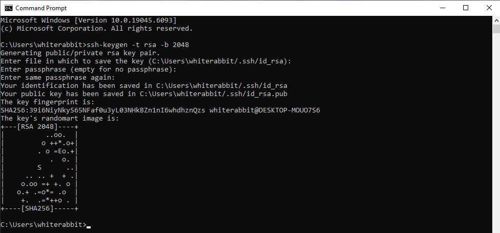
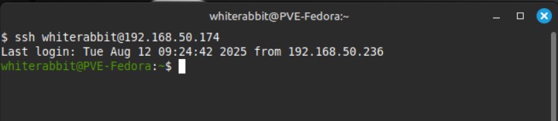

I am assuming SSH Server is already running on your target server
To use an SSH certificate (key-based authentication) instead of a password to log in remotely we need to first generate a keyssh-keygen -t rsa -b 2048This command also works on Microsoft Windows.
Use the ssh-copy-id command to install your public key on the remote server:
ssh-copy-id user@remote_server_ipMicrosoft users will do not have the ssh-copy-id command and will have copy their key using another method, such as to download WinSCP.
Attempt to SSH into the server:
ssh user@remote_server_ipIf set up correctly, you should log in without being asked for a password.
In the course of this project I learned about various algorithms used to generate keys, and how bit length affects security. Apparently there are still some old systems in the wild with insecure key lengths that are vulnerable and appear in the news from time to time after a breach.
Projects for the future might include trying to break a 512 bit key, or setting up a CA (Certificate Authority)
That’s it!